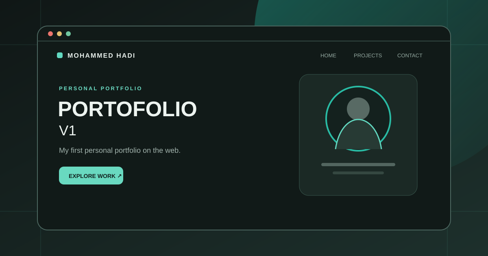
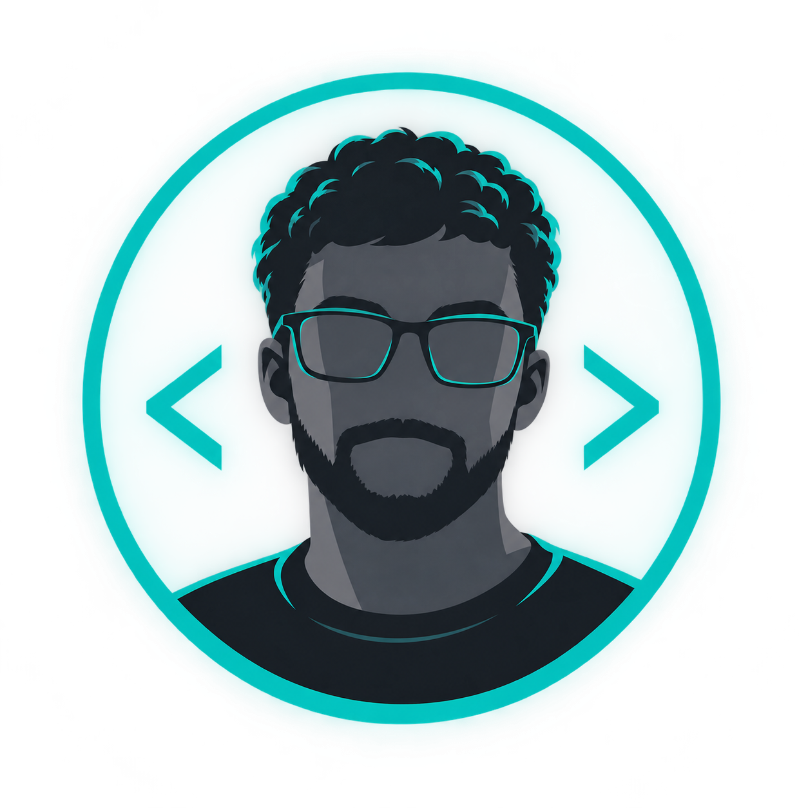

Personal portfolio
Portofolio V1
My first personal portfolio, introducing my work and web development journey.
Available for select projects
I’m Frah Chaouche Mohammed Hadi, a junior web developer turning ideas into clear, useful experiences on the web.

Learning, building, and refining small details that make digital products feel effortless.
What I work with
I enjoy working across the details: from structure and interactions to the visual rhythm of a page.
Semantic HTML, modern CSS, responsive layouts, accessibility basics.
Building friendly interfaces and clear behaviors with JavaScript.
Turning references and rough ideas into consistent, usable screens.
Currently exploring accessibility, animation, and better front-end workflows.
Things I’ve built
Small, considered projects where I’ve practiced turning a problem into a useful interface.
Personal portfolio
My first personal portfolio site, where I introduce myself and share my work.
Web design
A refined web project with a distinct visual identity.
Preview artwork is illustrative. Visit each project to see the live site.
A little about me
I’m a junior web developer based in Aindefla, drawn to the space where thoughtful design meets useful technology. I like making the web feel a little simpler, clearer, and more human.
Outside the browser, you’ll find me collecting good ideas, learning something new, or taking the long way home with a camera.
My focus
Accessible, thoughtful interfaces
I value
Curiosity · Care · Clarity
Have something in mind?
Send me a note below to open a WhatsApp message, or reach me directly.
Aindefla, Algeria · Open to remote collaboration